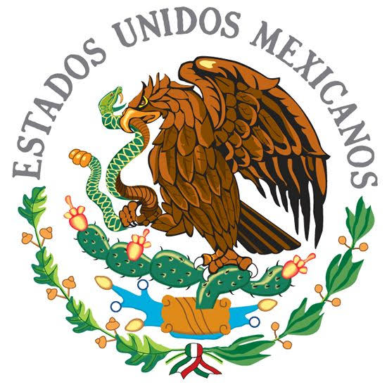

Mitos Históricos Populares
Porfirio Díaz no "movió" el Grito por su cumpleaños: Es un mito popular que el presidente cambió la fecha al 15 de septiembre para hacerla coincidir con su cumpleaños. La costumbre de iniciar los festejos la noche del 15 comenzó a consolidarse desde la década de 1840, años antes de que Díaz gobernara.
Miguel Hidalgo no tocó la campana: El Cura de Dolores no subió al campanario esa madrugada; quien realmente hizo sonar la campana para convocar al pueblo fue el campanero de la parroquia, José Antonio Rincón.
El Pípila representa un esfuerzo colectivo: No existen registros históricos que prueben la existencia individual de Juan José de los Reyes Martínez cargando una losa de piedra a la espalda. Su figura simboliza el heroísmo de los mineros de Guanajuato en la toma de la Alhóndiga.
Juan Escutia y la bandera: La célebre escena del cadete arrojándose al vacío envuelto en el pabellón nacional durante la Batalla de Chapultepec es una construcción mitológica del siglo XIX para ensalzar el patriotismo.
Datos Curiosos Poco Conocidos
El nombre completo del Padre de la Patria: Miguel Hidalgo fue bautizado como Miguel Gregorio Antonio Ignacio Hidalgo y Costilla Gallaga Mandarte y Villaseñor.
Independencia en papel, 11 años después: El movimiento comenzó en 1810, pero el Acta de Independencia del Imperio Mexicano se firmó hasta el 28 de septiembre de 1821, tras la entrada del Ejército Trigarante a la Ciudad de México.
Tardío reconocimiento español: España no aceptó formalmente a México como una nación independiente hasta diciembre de 1836, cuando se firmó el Tratado de Paz y Amistad entre ambas naciones.
Origen de los Chiles en Nogada: Las monjas agustinas del convento de Santa Mónica en Puebla crearon este platillo en 1821 para celebrar el santo de Agustín de Iturbide, combinando ingredientes de temporada para representar los colores de la bandera trigarante (verde, blanco y rojo).

NOMBRE : LOZANO LINARES MARCO ANTONIO
NO.CONTROL : 0587
SEMESTRE: 4TO SEMESTRE | GRUPO : 4*I
ESPECIALIDAD : PROGRAMACION